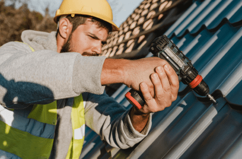
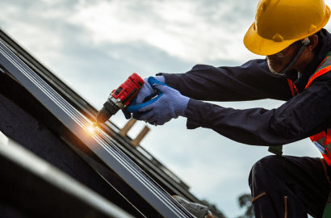
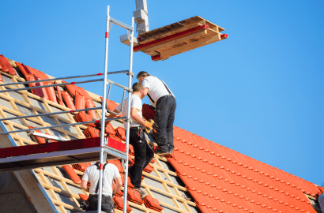
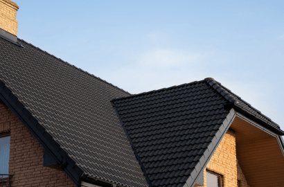
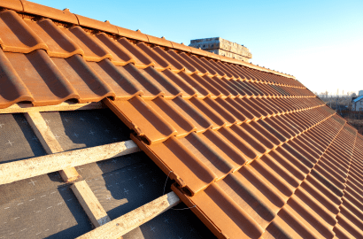
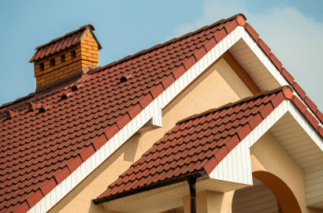

Konut Çatı Sistemleri
İstanbul'da konutlarınız için tam kapsamlı çatı çözümleri sunuyoruz. Asfalt shingle, kiremit, arduvaz ve metal çatıların kurulumu, onarımı ve bakımını uzman ekibimizle gerçekleştiriyoruz. Evinizin değerini ve estetiğini artıran, her türlü hava koşuluna dayanıklı çözümlerimizle hizmetinizdeyiz.

Çatı Güneş Panelleri
Mevcut çatı yapınıza entegre edilen profesyonel güneş paneli kurulum hizmeti. Enerji değerlendirmesi, sistem tasarımı, kurulum ve bakım dahil tam kapsamlı çözümler sunarak enerji tasarrufunuzu maksimize ediyoruz. İstanbul'un güneş enerjisi potansiyelini avantaja çevirin.

Ticari Çatı Sistemleri
İşletmeleriniz için özel olarak tasarlanan düz çatı, EPDM, TPO ve modifiye bitüm sistemleri. Ticari yapılarınız için sunduğumuz dayanıklı çözümlerle iş operasyonlarınızı aksatmadan, her türlü hava koşuluna karşı üstün koruma sağlıyoruz.

Yeşil Çatı Çözümleri
Ekolojik ve estetik bitkilendirilmiş çatı sistemlerimiz doğal yalıtım sağlar, kentsel ısı adası etkisini azaltır ve yağmur suyu yönetimi sunar. Bina yapınıza ve İstanbul'un iklim koşullarına uygun sürdürülebilir yeşil çatılar tasarlıyoruz.

Acil Çatı Onarımları
Fırtına hasarı, sızıntı ve yapısal sorunlar için 7/24 acil servis. Hızlı müdahale ekibimiz geçici çözümlerle ilave hasarı önler ve çatınızın bütünlüğünü kalıcı olarak restore eder. İstanbul'un sert hava koşullarına karşı anında çözüm.

Önleyici Bakım Programları
Kapsamlı bakım programlarımız sayesinde çatınızın ömrünü uzatıyoruz. Düzenli denetimler, temizlik, küçük onarımlar ve performans optimizasyonu ile maliyetli acil durumları önlüyor, garanti uyumluluğunu koruyoruz.
Çatı Yalıtımı
Enerji verimli yalıtım çözümleriyle kışın ısı kaybını azaltıp yazın serin tutuyoruz. Uzman kurulumumuz sayesinde enerji faturalarınız düşerken yıl boyu konforlu bir iç mekan sağlıyoruz.
Oluk Sistemleri
Dikişsiz alüminyum, bakır ve çelik oluk sistemleri için tam kapsamlı çözümler. Doğru şekilde kurulan oluklar, çatınızı, duvarlarınızı ve temelinizi su hasarına karşı korur.
Çatı Restorasyonu
Tam yenileme maliyetinin çok altında, çatınızın ömrünü 10-15 yıl uzatan ekonomik alternatif. Kapsamlı temizlik, onarımlar, yeniden kaplama ve sızdırmazlık işlemleriyle eski çatınıza yeni bir hayat veriyoruz.